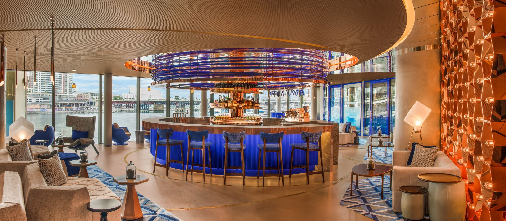

ACADEMIA · INDUSTRY · ECOSYSTEM
Hugo Mai.
HAOGUANG MAI · 麦浩光
Connecting research
with real-world possibility.
I connect frontier technology, people and opportunity — building research programmes and partnerships in embodied AI and robotics.
Three worlds. One continuous loop.
AcademiaIndustryEcosystem
Ideas become applications. Connections create new possibilities.BASED IN HONG KONG WORKING ACROSS BOUNDARIESSCROLL TO DISCOVER
01 / ABOUTTHE SPACE BETWEEN DISCOVERY & DEPLOYMENT
Good research opens doors.
I help connect what’s next.
At the University of Hong Kong’s OpenDriveLab and Autonomous Intelligent System Lab, I manage industry-sponsored research programmes and work across humanoid robotics, manipulation and autonomous driving.
My work spans research execution, university–industry partnerships, technology strategy and commercialization. Alongside this, I support corporate development and ecosystem engagement at Archon Robotics.
HK$9.31M
Industry-sponsored research
portfolio under management
03
Co-authored publications
in embodied AI and robotics
IEEE 3474
Working group member
& key drafting contributor
02 / SELECTED RESEARCHEMBODIED INTELLIGENCE, IN THE REAL WORLD
Publications
From agile humanoids to collaborative manipulation.
χ₀: Resource-Aware Robust Manipulation via Taming Distributional Inconsistencies
arXiv, 2026
Project story: A Live-Stream Robotic Teamwork for Clothing Manipulation from Zero to Hero.
Across these projects, my contributions span the research lifecycle, including ideation, experimentation, implementation, programme coordination and funding support.
03 / ECOSYSTEM BUILDINGPEOPLE, IDEAS & SHARED AMBITION
An ecosystem grows
one connection at a time.
Research workshops, industry collaborations, technology showcases and community conversations — a growing collection of initiatives I help bring to life.

SOCIAL MIXER VENUE · W SYDNEY ↗OpenDriveLab
at RSS 2026
I led the coordination and promotion of this series of activities, connecting research showcases, community conversations and industry engagement.
Workshops · robot demos · RoboLens interviews · TopTalents social mixer
Read the event storyResearch workshops
Workshop / research forum
Image, date, my role and highlights.
Industry partnerships
Partnership / joint initiative
Image, date, my role and highlights.
Community gatherings
Meetup / community event
Image, date, my role and highlights.
Technology showcases
Demo / exhibition
Image, date, my role and highlights.
Research storytelling
Interview / media feature
Image, date, my role and highlights.
Cross-disciplinary exchange
Roundtable / research exchange
Image, date, my role and highlights.
Talent & opportunity
Talent event / ecosystem gathering
Image, date, my role and highlights.
Future collaborations
New initiative / collaboration
Image, date, my role and highlights.
The outlined spaces are reserved for future additions. More initiatives will be added to this page.
04 / EXPERIENCEA PATH ACROSS RESEARCH & INDUSTRY
Different perspectives.
A connected practice.
Experience across university labs, frontier AI teams and industrial technology businesses.
View full CVThe University of Hong Kong
Research Project Manager · OpenDriveLab & AIS Lab
Industry-sponsored research, partner engagement and programme execution across embodied AI and autonomous driving.
Archon Robotics
Corporate Development & Strategic Project Support
Fundraising support, strategic funding proposals, technology communications and ecosystem engagement.
Jezetek
Technical Project Manager
Technology strategy, project incubation and cross-organization robotics R&D.
Shanghai AI Laboratory & SenseTime
Technical Operations Manager · Autonomous Driving
Research operations, team building and university collaboration.
XSense.ai · XPeng
Data Specialist · Perception Team
Data workflows supporting real-world autonomous-driving perception.
05 / GET IN TOUCHTHERE’S ALWAYS A NEXT CONNECTION
Let’s explore
what’s possible.
Research collaborations, industry partnerships,
or a conversation about what comes next.